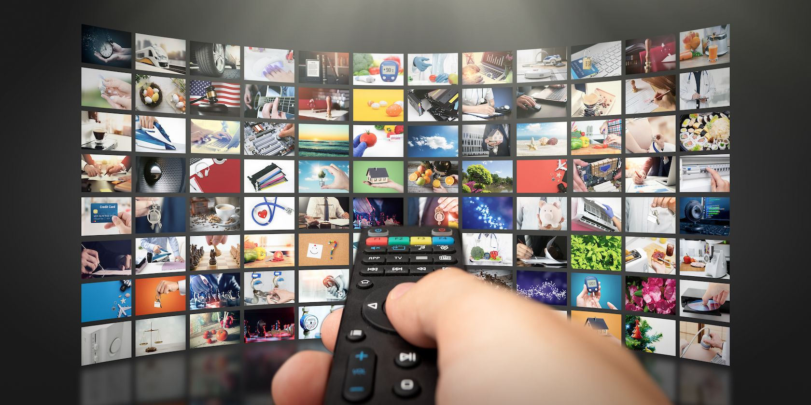
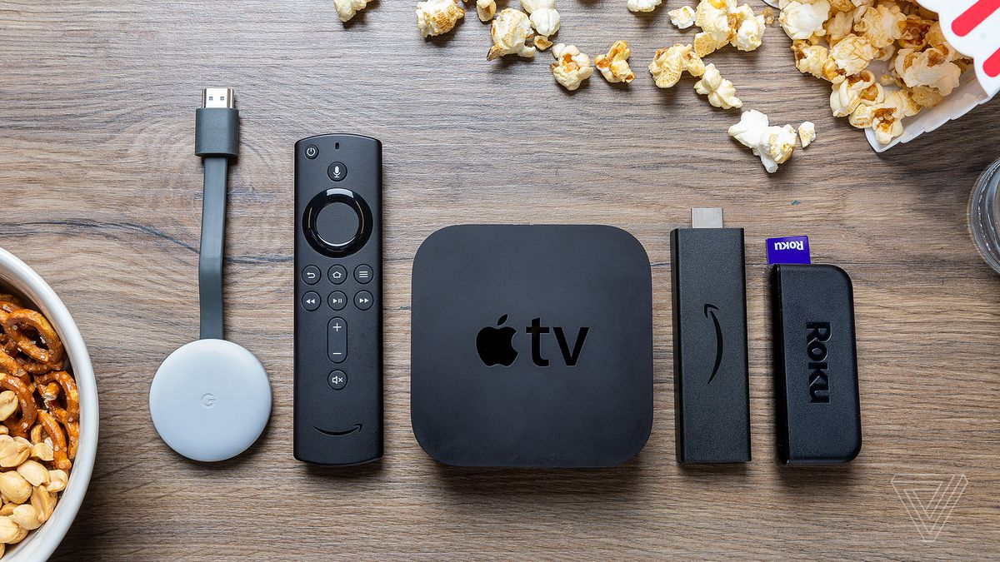
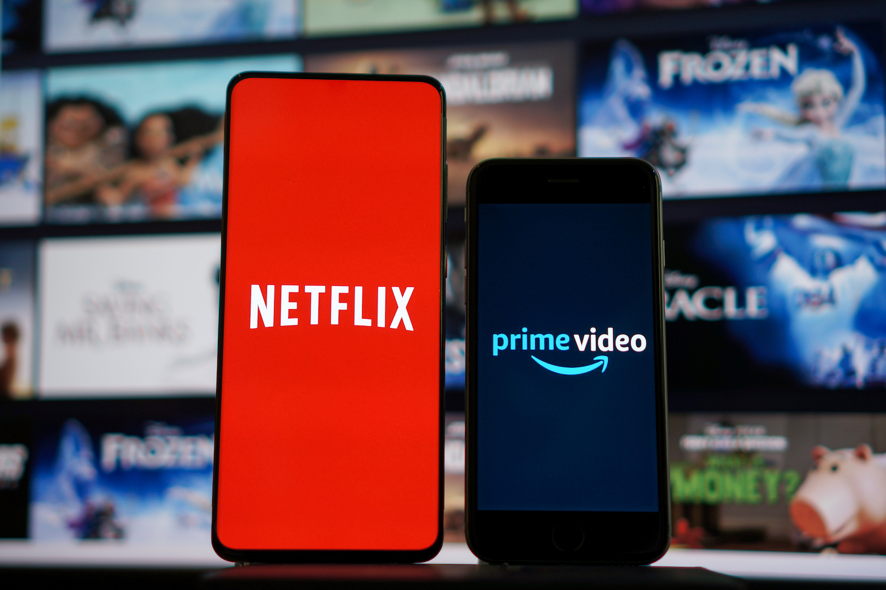
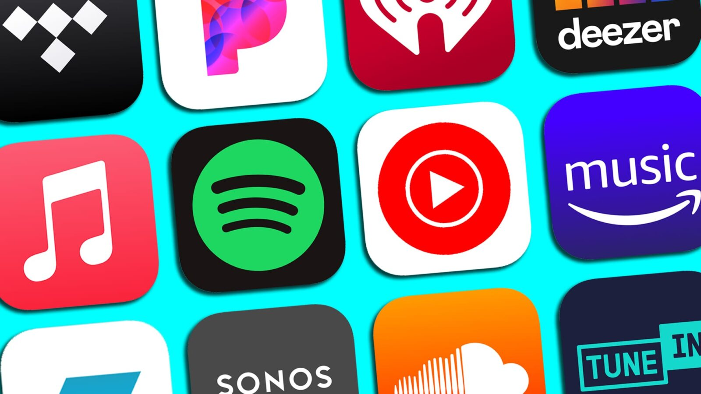
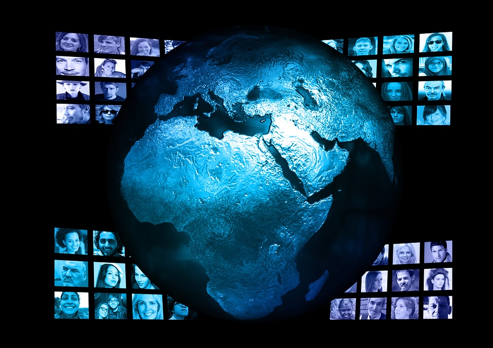

Welcome to my exploration of how streaming services have transformed media.
History
This section traces the development of streaming services from their inception to their current status as a dominant force in entertainment. It covers key milestones in the technology and business models that have enabled consumers to access music, movies, and TV shows over the internet, changing the way we consume media.
Feb2007
Launch of Netflix's Streaming Service
Originally a DVD rental service, Netflix's pivot to streaming transformed the media landscape by offering on-demand access to movies and TV shows. This marked the beginning of the end for traditional video rental stores and set the stage for the streaming revolution.
Oct2008
Introduction of Spotify
Spotify revolutionized the music industry by providing a legal, subscription-based music streaming service that offered access to millions of songs. This model helped combat piracy and changed how people consume music, moving from ownership (CDs, downloads) to access (streaming).
June2011
Twitch.tv Launch
Twitch's launch popularized live streaming, particularly for gaming content. It created a new media category where viewers could interact with content creators in real-time, significantly impacting the gaming industry and beyond by fostering communities around live broadcasts.
Apr2015
HBO Now: Streaming Without Cable Subscription
HBO Now marked a significant moment for traditional cable channels, offering a standalone streaming service that didn't require a cable subscription. This move acknowledged the growing consumer preference for streaming and set a precedent for other networks to offer direct-to-consumer streaming services.
Nov2019
Disney+ Launch
The launch of Disney+ signified a major shift in the streaming wars, with one of the world's largest media companies entering the arena. By pulling its content from other streaming services to offer exclusively on Disney+, it highlighted the importance of content ownership and exclusivity in the streaming industry, reshaping competitive strategies.
Impact
Streaming services have transformed the entertainment industry, affecting everything from how content is produced and distributed to how it's consumed by audiences worldwide. We'll look at the economic impacts, shifts in consumer behavior, and the rise of original content production by streaming platforms.

Revolutionizing Content ConsumptionStreaming services have transformed how audiences consume TV shows, movies, and music, enabling on-demand access anytime, anywhere. This shift has led to the decline of traditional TV viewership and physical media sales, fundamentally altering the entertainment landscape.

Impact on Cable TelevisionThe rise of streaming services has significantly contributed to the phenomenon known as "cord-cutting," where viewers cancel their cable subscriptions in favor of streaming platforms. This trend has forced cable companies to rethink their business models and offer more flexible streaming options.

Changes in Content ProductionStreaming platforms like Netflix and Amazon Prime have become major players in content production, investing billions in original content. This has led to a golden era of television and film, with an unprecedented amount of high-quality, diverse content available to global audiences.

Influence on Music IndustryStreaming has become the dominant form of music consumption, changing how music is distributed, monetized, and discovered. Artists now have direct access to global audiences, but the model has also raised questions about fair compensation and the value of music.

Globalization of ContentStreaming services have made it easier for international content to reach global audiences, breaking down geographical and cultural barriers. Shows like Netflix's "Money Heist" (La Casa de Papel) and "Squid Game" have become worldwide hits, showcasing the universal appeal of diverse storytelling.
Ethical Considerations
There are many ethical questions that arise with the growth of streaming services. Topics include the fairness of compensation to creators, the handling of user data, and the societal impacts of algorithm-driven content recommendations. We'll explore how companies and regulators are addressing these concerns and the ongoing debate over the ethical responsibilities of streaming platforms.
Fair Compensation for Creators
Understanding the debate between pro-rata and user-centric payment models and their impact on creators.
The debate over how music streaming services pay artists is significant, with discussions centered around pro-rata and user-centric payment models. Pro-rata payments distribute earnings based on an artist's share of total streams, potentially favoring popular artists over niche ones. User-centric payments allocate a listener's subscription fee to the artists they listen to, which might support a fairer distribution of income. This complex issue involves balancing the interests of artists, platforms, and listeners to ensure creators are fairly compensated for their work.
Transparency and User Data
Exploring how user data shapes the music industry and the importance of transparency in streaming services.
The European Union is considering reforms to increase transparency in the music streaming industry. These include making clear how revenue is allocated, disclosing the use of artificial intelligence in creating music, and ensuring recommendation algorithms do not unfairly favor certain artists or labels. Such measures aim to protect artists and ensure consumers understand how their data and preferences influence what they are recommended.
Societal Impact of Algorithm-Driven Recommendations
Examining how algorithms influence what we listen to and their broader cultural implications.
Streaming platforms' reliance on algorithms to recommend content to users can significantly impact what music gets heard and by whom. Concerns arise about whether these algorithms promote a diverse range of artists or reinforce the popularity of already successful ones. The EU's proposed reforms also address this, suggesting a need for algorithms that promote cultural diversity and prevent the domination of content from large record labels.
Foley, Marco. “New Study Analyses ‘Fair Compensation for Music Creators in the Digital Age.’” Fair Trade Music International, 28 Oct. 2014, www.fairtrademusicinternational.org/new-study-analyses-fair-compensation-for-music-creators-in-the-digital-age/.
“How Should Music Streaming Services Pay Artists?” www.fuqua.duke.edu, www.fuqua.duke.edu/duke-fuqua-insights/sasa-pekec-how-should-music-streaming-services-pay-artists.
Statista. “Topic: Streaming in the United States.” Statista, 23 Nov. 2022, www.statista.com/topics/1594/streaming/#topicOverview.
Striphas, Ted. “Algorithmic Culture.” European Journal of Cultural Studies, vol. 18, no. 4-5, 16 June 2015, pp. 395–412.
“The Most Ethical Way to Stream Music: Not at All | Center for Digital Ethics & Policy.” Digitalethics.org, digitalethics.org/essays/most-ethical-way-stream-music-not-all. Accessed 21 Feb. 2024.